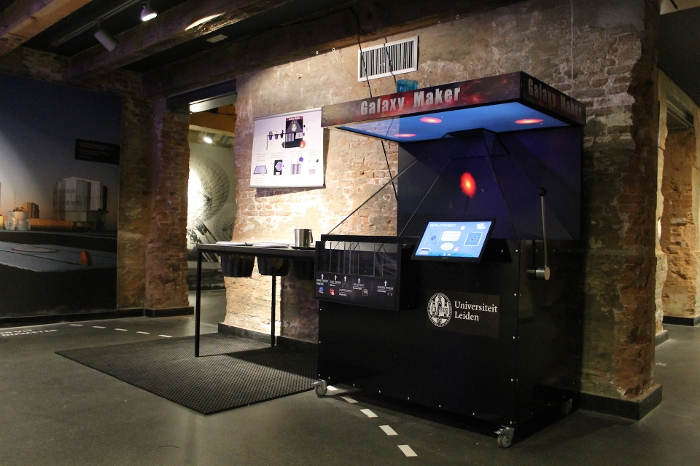

I am dedicated to outreach, in part because I love to share my excitement about the Universe, but especially because I believe that efforts to increase the participation of minorities in STEM can be best achieved through well-advised science communication.
I have been involved in numerous outreach events targeting all different age groups, ranging from online workshops for primary school children during the 2020 COVID-19 pandemic, to volunteer work at ‘Stichting RINO’ to promote STEM careers among high school students, and lecturing for the Beacon Hill seminar series for adults.
Below I summarise two of the projects in which I played a leading role.

Exhibition manager at the Old Observatory in Leiden:
The Old Observatory in Leiden is a historic building that contains a visitor center that is still actively used for astronomy outreach.
I led the development of a new exhibition for this visitor center, which was successfully installed in 2018.
In this role, I also coordinated the approximately 100 annual guided astronomy tours at the Old Observatory and oversaw the training of astronomy students to become new tour guides. With our team, we organized and hosted several yearly larger astronomy-related outreach events (each with about 100-1000 participants), including e.g., annual spring lectures and ‘the night of discoveries’.
Chair of Local Organising Committee for the ComSciCon-Flagship Workshop:
This science communication workshop for graduate students aims to empower future leaders in science communication.
As such, we place a large emphasis on diversity equity inclusion, and belonging.
Examples of workshops from this year's conference include ``Diversity in SciComm" and ``Disability in STEM".
I have been heavily involved in the organizing committee for the past 3 years, and have chaired the organization of last year’s Flagship event.
Outreach and Public service.